00读前一分钟 · 脉络与本篇性格
先看结构：46 是 with 伴随 ＋ that 定语从句（过去完成），47 是 分隔定语 ＋ 两个 that 定语从句，48 是 并列谓语 ＋ 两组时间状语，49 是 when 从句 ＋ 形容词短语后置，50 是 分号两分句 ＋ by which 定语从句（被动）——黄皮书五句的「考查要点」几乎都是定语从句，结构本身是年年见的常规件。
真正绕人的是：这篇文章是一部「增长史」，句句带着时间刻度。把画线句里的时间成分挑出来，就是一张时间轴：
战前数十年（3%–5% 一直不变）→ 战争结束时（仍是 3%–5%）→ 60 年代（每五年翻一番）→ 70 年代中期（再用七到十年翻一番）→ 稳定期／缓慢增长期（接纳新人的老规矩）。
每一格用的介词都不一样：came out of the war（时点，用一个动作表示）· during the decades before（时段）· within … periods（在一段时间之内完成，而且 periods 复数＝一轮接一轮）· in … years（历时多久）· by the middle of（截止到哪一点）· during periods of（泛指的一类时期）。
换错一个中文介词就换了一件事：by the middle of the 1970s 写成「在七十年代中期」，翻番就从「截至那时完成」变成「发生在那几年」（黄皮书初译试水正是这么错的）；the 1960s 写成「1960 年」，十年缩成一年（误译栏）。全清单见 02+ 节 A。
②段把增长拆成三种，原卷特意用斜体标出：rate of growth（增长率）· absolute size（绝对规模）· proportion of the relevant age group（适龄人口中的比例）。
⟹ 46 的 levels of enrollment … at 3%–5% of the relevant age groups 是比例（所以 enrollment 落「入学率」）；48 的 the numbers of students … doubled 是人数（所以写「学生人数翻了一番」，不能写「入学率翻了一番」）。
为什么这一条值钱：人数翻番不等于比例翻番——60 年代正是战后婴儿潮一代进入大学年龄，适龄人口本身就在变大。作者把三个指标分开说，就是为了不让读者把它们混为一谈；译文把 48 写成「入学率」，等于替作者把他刚分开的东西又粘了回去。（这一条黄皮书没有提，是本页补的；见 02+ 节 E 补 1。）
为什么敢立新的？按 2019 立的规矩「定机制看分值不看行数」逐块算（02+ 节 D）：时间 4 分 · 词义 3.5 分 · 结构 2.5 分。领先只有半分，这一点照实写；但另两条理由站得住：① 往年「时间」只当过暗线：2018 的「时间锚」讲过 by ＋ 时间点、过去完成落「已然」，2020 的「态」讲过体怎么落成副词——都排在当年主机制之后；2021 是时间第一次压分第一，与 2020 不立「态」的理由（它排第二）正好相反；② 误译栏 11 行词义错里，命令／玫瑰／班级／卷起来／粗野地／感觉官能／大规模地这 7 行属于「没人会这样错」的送分型，误译栏里真会有人写错的词只剩 staff（职工）、fresh from（新鲜的）、be admitted into（被承认）、community（社区）四行——按「考生真会错」算，时间的领先更大。 详见 02+ 节 C。
① enrollment 两年前是「人数」，今年是「入学率」：2019 T2《大学成绩宽恕的兴起》那页辨析过 retention（留存率）vs enrollment（注册在读的人数）；本篇 levels of enrollment 后面跟着百分数和 of the relevant age groups ⟹ 一个比例 ⟹「入学率」。同一个词，后面挂没挂「占谁的百分之几」，决定它是人数还是比率。
② faculty 十年里三个意思：2008 翻译《达尔文论智力》与 2009 翻译那两页把 faculty 列在 ability／capacity 的同类词里（能力、官能——正是本篇误译栏的「感觉官能」）；2011 新题型《知识与人才的专业化困境》faculty teaching hours 是「教员」；本篇 49 in that faculty 回指上一句的 a faculty or department ⟹「院系」。
③ doubled：去年刚立的「数」规矩直接用上——2019 翻译页「中文一侧也有数的坑」：翻一番 ＝ ×2，别写「增加了两倍」（那是 ×3）。48 两次 doubled，就是两次「翻一番」。
④ predominantly 是「主要」一族的老面孔：2010 T3、2017 完形（那页词卡列 mainly · chiefly · largely · predominantly）、2019 完形都出现过；本篇 49 同一句里还有一个 largely——一句之内「主要」「很大程度上」各一个，中文别都写成「主要」。
⑤ 「上大学」这条线从 2007 一直拉到 2022：2009 T3《教育与经济增长的真实关系》讲教育推动增长；本篇讲二战后高教扩张的起点；2022 T2《Z世代与学位》讲扩张之后的后果——英国 28% 的毕业生在做不需要学位的工作。一个扩张，开头和结尾隔了一年先后进了考卷。
⑥ in turn「继而」：2009 T3 那页的因果链「他们继而（in turn）负担得起更多教育」；本篇 ②❶ these in turn have given rise to 同一个用法——三种表现继而引出三套问题。
⑦ watershed · fresh from · in its wake · doubled · manifestation · empowerment 全部第一次进站（全站页面 grep 零命中，不含 2021 各页）；动词 empower 只在 2014 完形「赋能族」（allow／enable／help／empower sb to do）里出现过，apprenticeship 只在 2011 新题型一张词卡的构词栏出现过。
⏱ 建议动线：先做 01 原文区（读完三段原文，在纸上写完五句）→ 逐句进 02 五步精讲 自评采分点 → 回 02+ 节 A 拿自己的译文逐条对「时间轴」清单（凡是介词换错的，就是那一格的时间关系落错了）→ 03 清算表开默写模式 → 06 素材（「精英—大众—普及」三阶段与中国 2019 年毛入学率 51.6% 是现成的作文料）。
01原文区 · 全文三段（本机识别成文字 · 可切回原卷）
📄 原文是你的浏览器从原卷第 14 页识别出来的文字，下划线就是原卷的画线——考的只有带下划线的五段。
｜ 虚线词 ＝ 本句重难点，点开右侧出卡片；选中任意单词弹「查有道」（触屏长按选词）
｜ 每句末尾「原卷」切回扫描图（在扫描图上点任意词也能查有道），「校对」可改识别错的字
｜ 画线句下方「↘ 跳到 4X 五步精讲」，其余长句下方「↘ 跳到长难句精析」（05 节）
｜ 每段「意」= 本页自写的意译（按句意转述，不是参考答案）。
⚠️ 先把五句在纸上写完再往下翻——上下文的用处是给时间轴定格：46 说的「战前几十年」和「战争结束时」要靠 ①❶ 的 watershed 才知道是在对比；48 的 numbers 要靠 ②❹ 的 proportion 才知道不是比例；49 的 that faculty 要靠 ③❸ 前半句才知道回指谁。
① 分水岭：战前一直 3%–5%，战后需求暴涨、蔓延到新阶层，体系急剧扩张
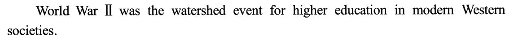
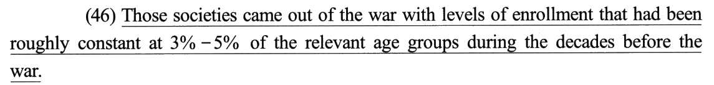
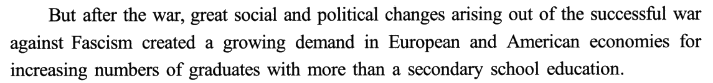
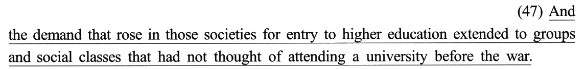
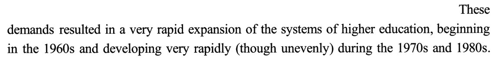
⚠️ 47 的 those societies 回指的不是「欧美经济」，而是 46 开头的 Those societies，也就是 ①❶ 的 modern Western societies——一段里 those societies 出现两次，指的都是「现代西方社会」。
② 三种增长：增长率（48）· 绝对规模 · 适龄人口中的比例
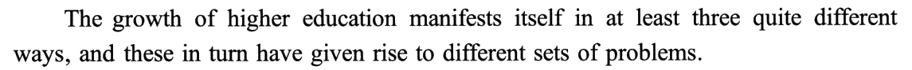
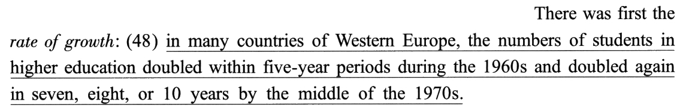
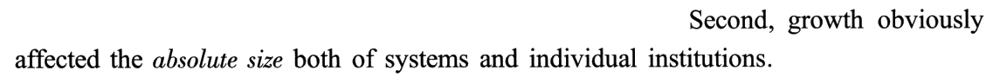
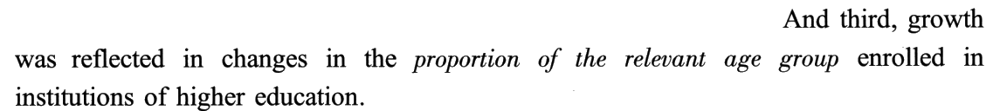
| 指标 | 原卷斜体 | 本篇哪里用到 | 中文 |
|---|---|---|---|
| ① 速度 | rate of growth | 48：人数每五年翻一番、再七到十年翻一番 | 增长率 |
| ② 规模 | absolute size | ③❸ 一个院系 5 人 → 20 人 | 绝对规模 |
| ③ 比例 | proportion of the relevant age group | 46：相应年龄人群的 3%–5% | 入学率 |
③ 增长的代价：新人定规矩（49）· 学生文化成了带教者 · 创新与旧规矩的削弱（50）· 治理放权
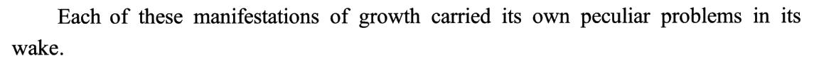
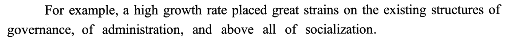
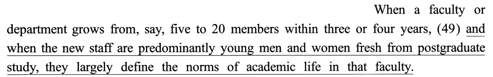
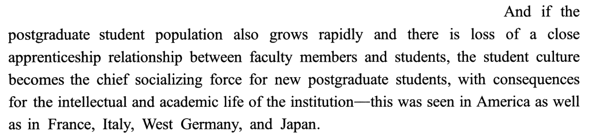
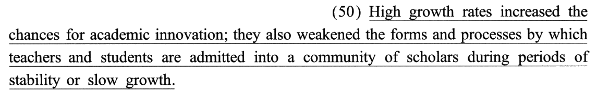
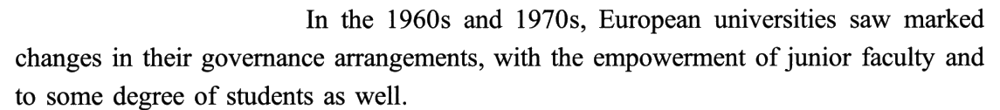
⚠️ 49 的主语 they 和 50 的主语 they 不是同一拨：49 的 they ＝ 新来的年轻教员（the new staff），50 的 they ＝ 高增长率（High growth rates）——两个 they 隔一句出现，各自回指最近的那个复数主语。
① 46 题：came out of the war —— 手快会写「这些社会走出了战争」。 主干的动作不是重点，这个动作是用来报时的：走出战争 ＝ 战争结束时。黄皮书词义栏：译为「战争结束时」以凸显二战前后的时间对比。
② 46 题：had been roughly constant … during the decades before the war —— 想写「在战前十年里保持不变」。 decades 复数 ⟹ 数十年；过去完成 ⟹ 一直到战争结束都是这样（所以战争结束时仍是 3%–5%）。这一块压整整 1 分。
③ 48 题：within five-year periods during the 1960s —— 想写「在 1960 年代的五年期内」。 the 1960s ＝ 二十世纪六十年代（误译栏：1960 年）；periods 复数 ⟹ 不止一个五年，一轮接一轮地翻番。
④ 48 题：in seven, eight, or 10 years by the middle of the 1970s —— 想写「在七十年代中期的七、八或十年里」。 in ＋ 时间段 ＝ 用了多久；by ＋ 时间点 ＝ 截至何时（误译栏：在中间）。黄皮书的初译试水就是这么错的。
⑤ 50 题：by which … are admitted into … during periods of stability —— 想把 by which 拆出去写「通过这种方式」。 by which 是定语从句的引导词，从句整体修饰 the forms and processes ⟹ 整个前置：「在稳定期……接纳……的那些形式和程序」。而且从句是一般现在时——说的是「平稳年代里一向如此」，不是那段历史。
02逐句五步精讲 · 切分 → 初译 → 难点 → 词义 → 导出
每句五个标签页按考场上真实的动作顺序排；下方采分点逐个自评（点一次「得分」、再点一次「丢分」），
右上角实时结算本句得分，本页总分见下。参考译文默认折叠——先写完再翻。
📐 本年五句切 14 个采分块：8 个 0.5 分块 ＋ 6 个 1 分块，和 2017、2019 的切法完全一样。46、49、50 是「0.5 ＋ 0.5 ＋ 1」，47 是「1 ＋ 0.5 ＋ 0.5」，48 是「1 ＋ 1」：两组时间状语各压 1 分，详见 02+ 节 D。
采分块的英文按结构关节用「｜」隔开（完整原句见每句上方的原卷句条）。「② 初译」页引自黄皮书的「初译试水」（书上故意示错，只摘翻车的片段）；「⑤ 导出」页与折叠的参考译文是本页口径，关键词取法与黄皮书一致，48、49 两处措辞与黄皮书有出入（不影响得分，理由见各句导出页与 02+ 节 E）。
切分眼：谓语只有一个——came out of；with 后面是名词短语，不是独立主格（没有分词），所以它是「带着……走出战争」的伴随状语。
⚠️ 本句两个时间刻度：主干的 came out of the war 是一个点（战争结束那一刻），从句的 during the decades before the war 是一段面（战前几十年）；过去完成 had been 把这段面一直拉到那个点上——所以「战争结束时」的入学率就是「战前几十年」的入学率，这就是黄皮书说的「隐含的同级比较」。
📐 本句三块：0.5 ＋ 0.5 ＋ 1——主干 0.5（时点），with 短语 0.5（enrollment），定语从句整整 1 分（时段 ＋ 比较）。
这份初译是黄皮书自己的「试水稿」。
本页作者盲译写成「这些社会走出战争时，其高等教育入学率在战前的几十年间一直大致稳定在相关适龄人口的 3%～5%」——入学率、数十年、稳定都对；「走出战争时」保留了一点字面，不如「战争结束时」干脆；把比较压进了一句，没像书那样拆出「这一水平」复指（都给分，见 02+ 节 F）。
- ⭐ came out of the war：动作报时 ⟹「战争结束时」。 黄皮书难点：本句与下句意在对比凸显战后入学率快速增加，翻译时突出的重点是「时间点」（二战刚刚结束时）和「关注对象」（入学率）。主语 Those societies 在中文里退到定语位置（「这些社会的」），时间点提到句首。
- ⭐⭐ 定语从句从两方面限定入学率：数值 ＋ 持续时间。 黄皮书把时间轴摊开：战前几十年适龄人群入学率 3%–5% → 战争期间入学率未知（可能受战火干扰）→ 战争结束时依然是 3%–5%。that 从句隐含的同级比较：战争刚结束时的入学率 ＝ 战前几十年的入学率，翻译要体现这一情形。
- ⭐ 拆成两句：数值放前、时段放后，用「这一水平」复指。 书的导出：「……入学率为相应年龄人群的 3%—5%，这一水平在战前数十年里大致保持稳定」——先报数，再说这个数维持了多久，比较关系一目了然。不拆也行（本页作者盲译就没拆），但定语里只能留一个时间刻度。
- roughly constant 加重语气 ⟹「保持稳定」。 黄皮书：文中借「战前入学率多年未变」凸显「战后入学率飞速增长」，可加重语气译「保持稳定」——「不变」是为下文的「暴涨」垫底。
- come out of the war —— 📕 结合难点分析，译「战争结束时」，以凸显二战前后的时间对比。⭐ 本句第一个时间刻度：时点。
- levels of enrollment —— 📕 译「入学率」，以呼应百分数 3%—5%，并符合语境（相应年龄群体接受高等教育的比例）。误译栏：enrollment「卷起来」。⭐ 2019 T2 的 enrollment 是「在读人数」——后面有没有「占谁的百分之几」决定是人数还是比率。
- constant —— 📕 形容词既可表「连续发生的；不断的」，也可表「不变的；固定的」；此处给出具体比例，是某一时期所保持的水平 ⟹ 取「不变的；固定的」，可加重语气译「保持稳定」。
- roughly —— 📕「大致；差不多」。误译栏：「粗糙地；粗野地」。
- relevant age groups —— 📕「相应年龄人群」（适龄人口）。⭐ ②❹ 的 proportion of the relevant age group 是同一个说法——作者自己告诉你 46 说的是「比例」。
- during the decades before the war —— decades 复数 ⟹「数十年」（不是「十年」）；⭐ 本句第二个时间刻度：时段。
| 疑难点 | 正译 | 误译 |
|---|---|---|
| enrollment | 入学；注册 | 卷起来 |
| roughly | 大致；差不多 | 粗糙地；粗野地 |
战争结束时，这些社会的高校入学率为相应年龄人群的 3%～5%，这一水平在战前的几十年里一直大致保持不变。
导出动作三个：① 时点提前：came out of the war 落成句首的「战争结束时」；② 主语降级：Those societies 变成「这些社会的」；③ 拆句复指：数值一句、时段一句，「这一水平」接上。
检查一句：译文里有没有「注册」「十年」？有一个就危险；「走出战争」不扣分，但把报时的动作写成了动作。
黄皮书导出：战争结束时，那些社会的高校入学率为相应年龄人群的 3%—5%，这一水平在战前数十年里大致保持稳定。
切分眼：谓语是 extended，不是 rose——rose 在 that 从句里。demand 后面连挂两个定语，原句顺序可调成 the demand for entry to higher education ｜ that rose in those societies ｜ extended to …（黄皮书注）。
⚠️ 时间刻度：句末 before the war 是 ①段的第三次「战前」（46 两次），过去完成 had not thought of ＝ 战前一直没想过——与 46 的「战前一直 3%–5%」是同一条时间线上的同一格。
📐 本句三块：1 ＋ 0.5 ＋ 0.5——主语连两个定语整整 1 分，谓语 ＋ 宾语 0.5，句末定语从句 0.5。
这份初译是黄皮书自己的「试水稿」。
本页作者盲译写成「而且，这些社会中对接受高等教育的需求不断上升，这种需求扩展到了那些在战前从未想过上大学的群体和社会阶层」——拆句、接受高等教育、群体都对；「这种需求」复指与书的「其范围」是同一个办法（见 02+ 节 F）。
- ⭐⭐ 主干拆成两截：「……的需求增长了，其范围扩大到……」。 黄皮书难点 1：主干 the demand … extended to … groups and social classes，嵌套的两个定语从句分别修饰 demand 和 groups…，可译为「……的需求增长了，其范围扩大到……的群体和社会阶层」——把定语从句里的 rose 升格成一个谓语。
- ⭐ 分隔定语 for entry to higher education：合回 demand ⟹「接受高等教育的需求」。 黄皮书难点 2：for 短语是 demand 的分隔定语，合译为「接受高等教育的需求」，再结合主干译成「接受高等教育的需求增长了，其范围扩大到……」。
- ⭐ 两个定语都前置会太长，而且压掉了「增长 → 蔓延」。 黄皮书难点 3：若译成「在这些社会中不断增长的对接受高等教育的需求」，定语过长，且无法突出「需求增长 → 蔓延至其他阶层（精英教育 → 大众教育）」这一现象 ⟹ 先译地点状语，再把定语从句单独译出：「那些社会中对于接受高等教育的需求增长了」。
- had not thought of + before the war ⟹ 前置定语「战前没有考虑过上大学的」。 黄皮书难点 4：过去完成否定式，结合时间状语 before the war 译成前置定语。这个定语短，前置不拖沓。
- rise (rose) —— 📕 作动词既表「增强；提高」也表「起源；发源」；搭配 demand rose 及上下文「入学率快速提升」⟹ 侧重「增强；提高」。误译栏：「起源；起立；玫瑰」。
- entry to —— 📕 意为「进入（指权利、机会）」，与 higher education 搭配时可译为「接受高等教育」。（书此处印作 high education，见 02+ 节 E 书误。）
- extend to —— 📕 表示「涉及（范围）；延伸（距离）」，多形容有形事物；「需求」是无形事物，且此处有「迅速扩散／影响到其他阶层和群体」之感 ⟹「（其范围）扩大到」。
- think of —— 📕 有「思考；替……着想」和「打算，考虑（做某事）」两个含义 ⟹ 取后者，结合过去时态「（没有）考虑过」。
- social classes —— 📕「阶层」。误译栏：「班级」。⭐ 与 groups 并列：groups 泛指人群，classes 指社会分层——「精英 → 大众」的扩张，就是 classes 一层层往下扩。
- demand —— 📕「需求」。误译栏：「命令」。
| 疑难点 | 正译 | 误译 |
|---|---|---|
| demand | 需求 | 命令 |
| rise (rose) | 提高；增强 | 起源；起立；玫瑰 |
| classes | 阶层 | 班级 |
这些社会中对接受高等教育的需求不断增长，其范围扩大到了战前从未考虑过上大学的群体和社会阶层。
导出动作三个：① rose 升格为谓语「需求不断增长」；② 分隔定语合回「接受高等教育的需求」；③ extended to 另起一截，用「其范围」接上。And 可译「而且」也可省（书省了）。
检查一句：「需求」前面的定语有没有超过两层？超了就拆。
黄皮书导出：那些社会中对于接受高等教育的需求增长了，其范围扩大到战前没有考虑过上大学的群体和社会阶层。
切分眼：两个谓语一模一样（doubled），差别全在时间状语上——这一句考的就是四个时间成分各自是什么关系。画线从冒号后的 in many countries 开始，冒号前的 There was first the rate of growth 不译。
⚠️ 时间 1 是「每一轮多快」，时间 2 是「下一轮多久、到哪年为止」：60 年代里每个五年都翻一番；之后再翻一番用了七到十年，到 70 年代中期为止完成。
📐 本句两块：1 ＋ 1——谓语 1 连时间 1 一块、谓语 2 连时间 2 一块，各压整整 1 分。
这份初译是黄皮书自己的「试水稿」——本篇「时间轴」机制在书里最直接的实据。
本页作者盲译写成「在许多西欧国家，20 世纪 60 年代高等院校在校学生人数每五年翻一番，到 70 年代中期又在七年、八年或十年内再翻一番」——两个时间状语都落对；within five-year periods 写「每五年」，与书的「五年」不同（见 02+ 节 E 商榷 1）。
- ⭐ 主干：「高校学生……翻了一番，之后……又翻了一番」。 黄皮书难点 1。⭐ 翻一番 ＝ ×2（2019 翻译页「数」的规矩）；两次翻番 ＝ ×4，不是「增加了四倍」。
- ⭐⭐ within 引导的时间状语：「在（某段时间）之内」。 黄皮书难点 2：within 意为「在（某段时间）之内」，during the 1960s 指 20 世纪 60 年代期间 ⟹ within five-year periods during … 可译为「在二十世纪六十年代五年」。⭐ 本页补：periods 是复数——不是「60 年代里有一个五年翻了一番」，而是「一个个五年接连翻番」⟹ 写「每五年」更贴（见 02+ 节 E）。
- ⭐⭐ in ＋ 时间段 ＋ by ＋ 时间点：「之后经过七、八或十年的时间到七十年代中期」。 黄皮书难点 3：具体结构为「in＋时间段＋by＋时间点」，可译为「之后经过七、八或十年的时间到七十年代中期」。in 说用了多久，by 说截止到哪——这两个介词一个都不能换。
- ⭐ 别把「人数」写成「入学率」。 本页补：②段特意把增长分成三种指标，48 属于第一种「增长率」，主语是 the numbers of students（人数）；「比例」是第三种（②❹）——48 写「入学率翻了一番」就把作者分开的两个指标粘到了一起。
- double —— 📕 在句中为不及物动词，译「翻一番；成……的两倍」。
- within five-year periods —— 📕 指「五年内」。⭐ periods 复数 ⟹ 反复发生：「每五年」。⚠️ 这是一个频率，不是一段特定的时期。
- the 1960s —— 📕「二十世纪六十年代」。误译栏：「1960 年」。⭐ 年份加 s ＝ 一个十年。
- in seven, eight, or 10 years —— in ＋ 时间段 ＝ 历时：「用了七年、八年或十年」。⭐ 三个数并列是「各国不一」：有的国家七年、有的十年。
- by the middle of the 1970s —— 📕 指六十年代末到七十年代中期的这段时间，译「到二十世纪七十年代中期」。误译栏：「在中间」。⭐ by ＋ 时间点 ＝ 截止点：到那时已经完成。
- the numbers of students —— 「学生人数」。⭐ 复数 numbers：各国各有一个数。
| 疑难点 | 正译 | 误译 |
|---|---|---|
| the 1960s | 二十世纪六十年代 | 1960 年 |
| by the middle of | 到……的中期 | 在中间 |
在许多西欧国家，20 世纪 60 年代高校学生人数每五年就翻一番，到 70 年代中期，又用了七年、八年或十年再翻了一番。
导出动作三个：① within … periods 落成「每五年」（书写「五年」，也给分）；② in 落成「用了」、by 落成「到……为止／到……」，各管各的；③ 倍数落「翻一番」。
检查一句：译文里有没有「1960 年」「在七十年代中期的……内」「入学率」？有一个就丢这一块的 1 分。
黄皮书导出：在许多西欧国家，高等院校的学生数量在二十世纪六十年代期间五年翻了一番，之后经过七、八或十年的时间到七十年代中期又翻了一番。
切分眼：两个 when 从句共用一个主句——画线外的「院系三四年里从 5 人涨到 20 人」和画线内的「新来的大多是刚读完研究生的年轻人」是并列的两个条件，and 把它们连起来。画线从 and when 起，所以译文开头的「而（当）」是有着落的。
⚠️ 时态：are · define 都是一般现在时——作者在说「一旦出现这种情况，通常就会这样」，是规律，不是某一年的事。
📐 本句三块：0.5 ＋ 0.5 ＋ 1——when 从句 0.5，后置定语 0.5，主句整整 1 分（faculty · define · norms 三个词都在这一块）。
这份初译是黄皮书自己的「试水稿」。
本页作者盲译写成「而当新教员主要是刚完成研究生学业的青年男女时，他们在很大程度上界定了该院系学术生活的规范」——staff「教员」、faculty「院系」、norms「规范」都对；define 写「界定」，书写「确立」（都给分，见 02+ 节 F）。
- ⭐ 主干：they ＝ 新教职员工；norms ＝ 规范。 黄皮书难点 1：they 指代前句的「新教职员工」；norms（复数）指「规范；行为标准」（如 social／cultural norms）⟹ the norms of academic life 译「学术生活规范」；主干「新教职员工就在很大程度上确立了所在院系的学术生活规范」。
- ⭐ 后置定语 fresh from postgraduate study ＝ who are fresh from … 黄皮书难点 2：相当于一个定语从句，译「刚刚完成研究生学业的……」。fresh 在这里是「刚……的」，误译栏：「新鲜的」。
- ⭐ when 从句与主句：「条件—结果（新情形—影响）」⟹「当……时，他们就……」。 黄皮书难点 3：时间状语从句和主句存在「条件—结果」的语义关联，可译「当绝大多数新教职员工是刚刚完成研究生学业的年轻人时，他们就……」——一个「就」字把规律性译出来。
- and when：画线从 and 起，「而」可以留。 本页补：书的导出省了 and；可 and 连的是画线外的第一个 when 从句——「院系猛扩，而新人又大多是刚毕业的」，两个条件叠加才导致「新人定规矩」。留一个「而」，读者就知道前面还有一个条件；省了也不扣分。
- staff —— 📕 集合概念，指「院系教员」。误译栏：「职工；员工」。⭐ 集合名词作主语配 are（the new staff are）——看成「一群人」。
- faculty —— 📕 本身既可指「院系」也可指「全体教员」，但此句 faculty 被 that 限定，回指上句的 a faculty or department，表明其义同 department ⟹「院系」。误译栏：「感觉官能」。⭐ 2008、2009 翻译页 faculty ＝ 能力，2011 新题型 ＝ 教员，本篇 ＝ 院系。
- define —— 📕 本义「给……下定义；阐明」，此处强调新教员会制定新的规范和标准 ⟹「确立」更合理。
- fresh from —— 📕「刚从……出来的；刚经历……的」。误译栏：「新鲜的」。
- largely —— 📕「很大程度上」。误译栏：「大规模地」。⭐ 同句还有 predominantly（主要地、绝大多数）——两个「主要」一句里各一个，中文别重复：一个落「绝大多数／大多」，一个落「很大程度上」。
- predominantly —— 「主要地；占多数地」，书译「绝大多数」。
| 疑难点 | 正译 | 误译 |
|---|---|---|
| staff | 院系的全体教员 | 职工；员工 |
| fresh from | 刚从……出来的；刚经历……的 | 新鲜的 |
| faculty | 院系 | 感觉官能 |
| largely | 很大程度上 | 大规模地 |
而当新教员大多是刚完成研究生学业的青年男女时，他们在很大程度上就确立了该院系的学术生活规范。
导出动作三个：① and when 落「而当……时」（「而」可省）；② fresh from 前置「刚完成研究生学业的」；③ 主句加「就」，把「条件—结果」译出来。
检查一句：faculty 写成「教职工」还是「院系」？that faculty 回指的是上句那个院系——写「全体教员」就和主语 they 撞了。
黄皮书导出：当绝大多数新教职员工是刚刚完成研究生学业的年轻人时，他们就在很大程度上确立了所在院系的学术生活规范。
切分眼：by which 在从句里作状语，可还原为 teachers and students are admitted into … by the forms and processes——「凭借这些形式和程序被接纳进来」。
⚠️⚠️ 两个时态是故意不一样的：主句 increased · weakened 是过去时（六七十年代那段高增长），从句 are admitted 是一般现在时（平稳年代里一向如此的常设机制）——时间状语 during periods of stability or slow growth 是复数、泛指「这一类时期」。高增长是那段历史，接纳新人的老规矩是常态：50 说的是「那段历史冲淡了常态」。
📐 本句三块：0.5 ＋ 0.5 ＋ 1——分句 1 0.5，分句 2 主干 0.5，定语从句整整 1 分。
这份初译是黄皮书自己的「试水稿」。
本页作者盲译写成「高速增长增加了学术创新的机会；但同时也削弱了在稳定期或缓慢增长期教师和学生被接纳进学者共同体的形式与程序」——定语从句前置、加「同时」、省 they 都对；「被接纳进」保留被动（书改主动「接纳……进入」），不扣分但读着略拗（见 02+ 节 F）。
- ⭐ 分号两分句：保留，加「同时」衔接，省掉第二个 they。 黄皮书难点 1：全句由分号断成两个分句，翻译时可基本保持；为更符合汉语表述习惯，加「同时」以衔接，同时省译第二个分句的共用主语 they：「高增长率增加了学术创新的可能性；同时也弱化了……的形式和流程」。
- ⭐⭐ by which 定语从句：整体前置。 黄皮书难点 2：by which 在从句中作状语，可还原为 teachers and students are admitted into … by which／the forms and processes；整个定语从句对「形式和流程」进行补充说明，翻译时可前置译为「在稳定时期或缓慢增长时期接纳教师和学生进入学者群体的（那些形式和流程）」——被动顺手转成主动「接纳」。
- ⭐ 时态错位是信号（本页补）。 从句一般现在时 ＋ 复数的 periods ⟹「在稳定期或缓慢增长期」写成泛指即可，别写成「在那段稳定和缓慢增长的时期」——那就特指化了，好像历史上某一段。
- be admitted into —— 📕 源自固定短语 admit sb into sth（准许某人加入某组织；接纳某人为某组织的成员），文中强调老师和学生被准许加入学者团体 ⟹「接纳……进入」。误译栏：「被……承认」。
- community —— 📕 本义「社区；社会」，a community of scholars 指「由学者组成的一个群体／团体」⟹ 取僻义「团体；群体」。误译栏：「社区」。⭐ 也可写「学术共同体」，社会学里的通行译法。
- chances —— 书译「可能性」，写「机会」也对。⭐ 复数 chances ＋ for ＝ 某事发生的可能。
- forms and processes —— 「形式和程序／流程」：接纳新人的那套仪式与步骤（比如学徒式的带教、逐级晋升）。
- weaken —— 「削弱；弱化」。⭐ 和 increased 构成一升一降：高增长一手给（创新机会），一手拿走（老规矩）。
| 疑难点 | 正译 | 误译 |
|---|---|---|
| be admitted into | 获准加入 | 被……承认 |
| community | 团体 | 社区 |
高增长率增加了学术创新的机会；同时也削弱了在稳定期或缓慢增长期接纳教师和学生进入学者群体的那些形式和程序。
导出动作三个：① 分号保留 ＋「同时」衔接 ＋ 省 they；② by which 从句整体前置；③ 被动转主动「接纳教师和学生进入」。
检查一句：译文里有没有「通过这种方式」「社区」「被……承认」？有一个就丢那一块。
黄皮书导出：高增长率增加了学术创新的可能性；同时也弱化了在稳定时期或缓慢增长时期接纳教师和学生进入学者群体的那些形式和流程。
02+专栏 · 本篇最贵的六处
A · 「时间轴」全清单 18 处——拿自己的译文逐条对
全文所有时间成分按出现顺序排开（画线内 11 处，标黄；画线外 7 处，它们给画线句定了时间轴）。 右两栏是「这一种时间该怎么落」和「最常见的落错法」——译文里只要出现右栏的说法，就是那一格的时间关系落错了。 画线内的条目覆盖了 14 个采分块里的 7 块，压着的分合计 5.5 分。
| 位置 | 英文 | 哪一种时间 | 中文落法 | 落错法 |
|---|---|---|---|---|
| ①❶ | World War II was the watershed event | 分界点 | 二战是……分水岭 | 「分水岭事件」照搬也可；别写「转折」——watershed 强调的是前后分成两块 |
| 【46】 | came out of the war | 时点（用一个动作报时） | 战争结束时 | 这些社会走出了战争／从战争中出来（把报时的动作当动作） |
| 【46】 | had been … during the decades before the war | 时段 ＋ 过去完成（一直持续到「战争结束时」那个点） | 在战前数十年里一直…… | 战前十年（decades 复数）· 丢了「一直」（同级比较没了） |
| ①❸ | But after the war | 时点之后 | 但战后 | — |
| 【47】 | had not thought of … before the war | 过去完成否定 ＋ 时点之前 | 战前从未考虑过……的 | 把 before the war 挂到 extended 上：「战前需求就扩大到……」 |
| ①❺ | beginning in the 1960s | 起点 | 始于 20 世纪 60 年代 | 「1960 年开始」 |
| ①❺ | during the 1970s and 1980s | 时段 | 在 70、80 年代 | — |
| ②❷–❹ | first … Second … third | 不是时间，是列举 | 首先……其次……第三 | 「第一次……第二次」——三种表现是并列的，不是先后发生的 |
| 【48】 | within five-year periods | 在一段时间之内完成 ＋ 复数＝反复（频率） | 每五年／五年内（就翻一番） | 在五年期间（说成一段特定时期） |
| 【48】 | during the 1960s | 所在年代 | 20 世纪 60 年代（期间） | 1960 年（误译栏） |
| 【48】 | doubled again | 第二轮 | 又／再翻了一番 | 漏掉 again：两次翻番写成一次 |
| 【48】 | in seven, eight, or 10 years | 历时（用了多久） | 用了／经过七、八或十年 | 在第七、八、十年（把时长写成时点） |
| 【48】 | by the middle of the 1970s | 截止点（到那时已完成） | 到 70 年代中期（为止） | 在七十年代中期（的……内）（误译栏 ＋ 初译试水） |
| ③❸ | within three or four years | 在一段时间之内完成 | 在三四年内 | —（与 48 同一个 within，画线外再练一次） |
| 【49】 | and when the new staff are … | 条件式时间（一般现在时＝规律） | 而当……时，（他们）就…… | 写成某一次的事：「当时新来的……」 |
| 【50】 | increased · weakened ↔ are admitted | 过去时（那段历史）vs 一般现在时（常设机制） | 增加了／削弱了 ↔ 接纳（不加「了」） | 从句也写成「当时被接纳」——把常态说成了历史 |
| 【50】 | during periods of stability or slow growth | 泛指一类时期（复数） | 在稳定期或缓慢增长期 | 在那段稳定和缓慢增长的时期（特指化） |
| ③❻ | In the 1960s and 1970s | 时段（回到历史） | 在 20 世纪 60、70 年代 | — |
战前数十年（46 从句 · 47 从句）→ 战争结束时（46 主干）→ 60 年代（48 前半：每五年翻番）→ 70 年代中期（48 后半：再用七到十年翻番）→ 六七十年代的高增长 vs 平稳年代的常态（49 · 50）。
五个画线句恰好从轴的左端一路排到右端——这不是巧合，是这篇增长史的写法：①段写「起点」，②段写「速度」，③段写「代价」。考场上第一遍通读就把这根轴画在草稿纸上，写每一句前先问「这一句在轴上哪一格？用的是点、段、频率还是截止点？」
⚠️ 清单里只有一处「看着像时间、其实不是」：②段的 first／Second／third 是列举三种表现，不是三个先后阶段——「首先是增长率」不能写成「最初是增长率」。
B · 出处与背景 · 马丁·特罗与「精英—大众—普及」三阶段
黄皮书只给了书名与章名；以下作者与出版信息为本页检索核实（Springer 图书馆目录与引文条目一致），没有抓原文全文比对（2021 起的口径）。
| 项 | 内容 |
|---|---|
| 作者 | 马丁·特罗（Martin Trow，1926–2007），美国加州大学伯克利分校的高等教育社会学家 |
| 章名 | Reflections on the Transition from Elite to Mass to Universal Access（副题 Forms and Phases of Higher Education in Modern Societies since WWII）（考卷节选的是开篇 Aspects of Growth） |
| 出处 | International Handbook of Higher Education，James J. F. Forest 与 Philip G. Altbach 主编，Springer，2006，第一卷，第 243–280 页 |
| 理论 | 特罗 1973 年提出的三阶段论：适龄人口中上大学的比例 15% 以下＝精英阶段、15%–50%＝大众化阶段、50% 以上＝普及化阶段（他本人强调这是理想类型，不是精确分界）。这一章是他晚年对这套框架的回顾 |
| 与本篇 | 46 的「战前一直 3%–5%」就是典型的精英阶段；②段三种指标里的 proportion of the relevant age group 正是三阶段论用来划线的那个量 |
| 中国 | 据教育部统计公报的报道：高等教育毛入学率 2002 年首次超过 15%（进入大众化）；2019 年达到 51.6%（进入普及化），比 2018 年的 48.1% 高 3.5 个百分点 |
每五年翻一番 ≈ 每年 +14.9%；七年翻一番 ≈ +10.4%，八年 ≈ +9.1%，十年 ≈ +7.2%。⟹ 70 年代的第二轮翻番明显慢下来了——48 句没说「慢了」，可 within five-year 和 in seven, eight, or 10 years 并排一放，「先快后慢」就在数字里。
⚠️ 两次翻番 ＝ 人数 ×4，不等于入学率 ×4：人数还受适龄人口多少影响（60 年代正赶上战后出生的一代进入大学年龄）。这正是作者把 rate、size、proportion 分成三条的原因（00 节第二条暗线）。
考场用不着算这些，但算一遍能让你看清：48 的两组时间状语，一组说「快」、一组说「慢下来」——译成「每五年」和「用了七到十年」，这个对比才在中文里留得住。
C · 十五年十四种丢分机制 · 2021「时间轴」＝ 2018 暗线转正 · 和 2020「态」的边界
| 年 | 机制 | 一句话 | 识别信号 |
|---|---|---|---|
| 2007 | 词义 | 熟词僻义：抽象名词要跟着语境改义项 | 法律／新闻类说理文，实词抽象 |
| 2008 | 词性 | 同一个词在句中的词性判错，整句塌 | 达尔文自述，长句多、插入语多 |
| 2009 | 语序 | 英文语序照搬进中文，读不成句 | 教育类论说，从句层层后置 |
| 2010 | 固定表达 | 小词结成串（to the effect that / as such / within reason） | 制度、环保类政论 |
| 2011 | 名词化 | 动词变名词，要还原成动作 | 励志／哲理书评 |
| 2012 | 语篇 | 钥匙在画线句外，回指词要还原 | 《自然》社论，五句句首全是承上成分 |
| 2013 | 修辞 | 词取常用义，搭配不合汉语常理（物作主语、拟人、移就） | 散文随笔 |
| 2014 | 重组 | 读一遍全懂，照骨架落笔句句别扭 | 音乐家谈勇气，短句多 |
| 2015 | 语体 | 意思对、档位错（政治腔／商贸腔／字面） | 美国史概述，史笔 |
| 2016 | 虚词 | 小词单个用，要认它在这里是哪种功能 | 心理自助书，实词简单到反常 |
| 2017 | 情态 | 刻度不能吞：may／could／should／appear to／likely／possible 各说了几分把握 | 政府、机构、基金会的报告与前言；通篇在预测 |
| 2018 | 词场 | 全文在一个行当里说话，熟词进场换身份（companies 剧团 · playhouses 剧场）；也要防进过头 | 学术著作、专门史的章节；同一行当的名词反复出现 |
| 2019 | 数 | 词尾一个 -s 换义项；主谓一致定先行词；倍数先找基准 | 题材是评价、指标、统计、排名、通胀；复数名词成串 |
| 2020 | 词场（重演） | 两个行当在一篇里打仗（宗教 vs 理性与科学），先判词站哪一边；判场看所指不看出身 | 思想史、科学史、宗教史；大写专名成串 |
| 2021 | 时间轴 | 五句句句挂时间状语，分数压在「这是哪一种时间」：时点（came out of the war ＝ 战争结束时）· 时段（during the decades）· 频率（within five-year periods ＝ 每五年）· 历时（in … years）· 截止点（by the middle of ＝ 到……为止）· 泛指（during periods of） | 「增长史」「发展史」类文章；年代（the 1960s）、倍数（doubled）、百分比成串；within / in / by / during / before 密集出现 |
⭐ 时间在本站出现过三次，管的是三件不同的事：
| 对照 | 2018《莎士比亚时代的戏剧盛世》 | 2020《文艺复兴与理性时代》 | 2021《二战后高等教育大扩张》 |
|---|---|---|---|
| 地位 | 暗线（「时间锚」） | 第三条线（「态」，不立机制） | 本年机制 |
| 管什么 | 三段挂在莎士比亚的三个年龄上：by the date of ＝ 到……时；过去完成落「已然」（截止到他二十五岁那年） | 被动、进行、完成怎么落成「因……而／不断／一直／即告」 | 时间状语本身：介词说的是哪一种时间关系 |
| 语法位置 | 时间状语 ＋ 动词词形 | 动词词形 | 介词短语、从句、年代与数字 |
| 典型错 | by the date of → 到他生日那天 | were being made → 正在被制造 | by the middle of → 在中间 · the 1960s → 1960 年 |
| 考场动作 | 先找时间锚 | 被动换主动、体落副词 | 画时间轴，每个介词问一句「点、段、频率还是截止点」 |
① 分值：2020 的「态」3 分，排在词场 5 分后面，是第二；2021 的时间 4 分，是第一（领先词义半分）。
② 新不新——照实说：不全新。2018 页的「时间锚」暗线已经讲过 by ＋ 时间点 ＝ 到……时（by the date of 词卡）和「截止到他二十五岁那年」，2015、2017 页的词卡里也出现过 within ＋ 时段；新的是两件事：一是它第一次排到分值第一（2018 那年主机制是词场）；二是「频率」这一格——复数 periods 把「五年内」变成「每五年」，此前十四个翻译页没有讲过（站内 grep「频率」只在 2015 页出现一次，讲的是 sometimes／often）。
⟹ 所以这一条更准确的说法是：2018 的暗线在 2021 转正，而不是凭空多出一种。
⟹ 十五年十四种：词场考了两遍，其余各一遍。「时间轴」和 2019 的「数」是邻居（都爱出在统计类、发展史类文章里，2021 的 48 还顺手考了倍数）——考前这两种放在一起练。
D · 采分点 14 块（8 × 0.5 ＋ 6 × 1）· 分值账：时间 4 分 · 词义 3.5 分 · 结构 2.5 分
黄皮书五句的采分切法；右两栏是本页判断的「这一块最容易丢在哪」及所属机制：
| 块 | 采分块（按关节缩写） | 分 | 压着的关节 | 主风险 |
|---|---|---|---|---|
| 46-1 | 主干 came out of the war | 0.5 | 时点：动作报时 ⟹ 战争结束时 | 时间 |
| 46-2 | with levels of enrollment | 0.5 | 义项：enrollment ＋ 百分数 ⟹ 入学率 | 词义 |
| 46-3 | that 从句：constant … during the decades before the war | 1 | 时段 ＋ 过去完成 ＋ 隐含比较（战后＝战前）；decades 数十年 | 时间 |
| 47-1 | the demand that rose … for entry to higher education | 1 | 结构：分隔定语、rose 升格为谓语 | 结构 |
| 47-2 | extended to groups and social classes | 0.5 | 义项：extend to 扩大到 · classes 阶层 | 词义 |
| 47-3 | that had not thought of … before the war | 0.5 | 过去完成否定 ＋ before the war ⟹ 战前从未；think of 取「考虑」 | 时间 |
| 48-1 | doubled within five-year periods during the 1960s | 1 | 频率 ＋ 年代：每五年 · 60 年代（不是 1960 年）；倍数：翻一番 | 时间 |
| 48-2 | doubled again in … years by the middle of the 1970s | 1 | 历时 ＋ 截止点：用了七到十年 · 到 70 年代中期（不是「在」） | 时间 |
| 49-1 | and when the new staff are predominantly … | 0.5 | 义项：staff 教员（不是职工）· predominantly 绝大多数 | 词义 |
| 49-2 | fresh from postgraduate study | 0.5 | 义项：fresh from 刚……的（不是新鲜的）；后置定语前移 | 词义 |
| 49-3 | they largely define the norms … in that faculty | 1 | 义项：faculty 院系 · define 确立 · norms 规范 · largely 很大程度上 | 词义 |
| 50-1 | increased the chances for academic innovation | 0.5 | 义项：chances 可能性／机会 | 词义 |
| 50-2 | they also weakened the forms and processes | 0.5 | 指代：they ＝ High growth rates；省译 ＋「同时」 | 结构 |
| 50-3 | by which … admitted into … during periods of … | 1 | 结构：by which 从句前置、被动转主动；时态：泛指常态 | 结构 |
| 主风险 | 块 | 分值 | 说明 |
|---|---|---|---|
| 时间 | 46-1 · 46-3 · 47-3 · 48-1 · 48-2 | 4 | 五块，其中三块是 1 分块（46-3 · 48-1 · 48-2）；误译栏两行（1960 年 · 在中间）＋ 48 初译试水是实据 |
| 词义 | 46-2 · 47-2 · 49-1 · 49-2 · 49-3 · 50-1 | 3.5 | 六块，只有 49-3 是 1 分块；误译栏 11 行里 7 行是送分型（见 E） |
| 结构 | 47-1 · 50-2 · 50-3 | 2.5 | 分隔定语 · 指代省译 · by which 前置 |
⭐ 口径说明：「主风险」只按一块里最可能丢分的那个关节记一次。领先只有半分，敏感性照实写：47-3 如果改记词义（think of 的义项），时间与词义就是 3.5 比 4，词义反超；50-3 如果改记时间（那个一般现在时），时间是 5 分。 两种改法方向相反、幅度相同——本页按「这一块在误译栏和初译里实际错在哪」定：47-3 的 think of 书上没有列误译，50-3 的初译试水错在 by which 拆句（结构）——所以维持 4 · 3.5 · 2.5。再加上 C 节的「暗线转正」，定 2021 为「时间轴」。
| 年 | 块数 | 0.5 分块 | 1 分块 | 切法 |
|---|---|---|---|---|
| 2020 | 12 | 4 | 8 | 最粗 |
| 2007 | 13 | 6 | 7 | 第二粗 |
| 2017 / 2019 / 2021 | 14 | 8 | 6 | 第三粗（三年并列） |
| 2014 | 16 | 12 | 4 | 较粗 |
| 2008 / 2012 / 2015 | 18 | 16 | 2 | 常规 |
| 2009 / 2010 / 2011 / 2016 / 2018 | 19 | 18 | 1 | 常规（最常见的切法） |
| 2013 | 20 | 20 | 0 | 最细（全是 0.5） |
粗切分的趋势在延续（各年块数已用脚本从十五个翻译页的 data-v 逐一数出）：
① 近五年四次「粗切」（2017 · 2019 · 2020 · 2021），而 2008–2016 九年里只有 2014 一次；2017–2021 五年里只有 2018 回到了常规的 19 块。
② 2021 的 6 个 1 分块里，3 块主风险是时间（46-3 · 48-1 · 48-2）：48 一句两块全靠时间状语，一个 by 读成「在」就整整丢 1 分。
E · 误译表 13 行的病根 · 🔍 书误 1 处 · 与黄皮书商榷 4 处 ＋ 补 3
五张「翻译疑难点」表一共 13 行误译（46 两行 · 47 三行 · 48 两行 · 49 四行 · 50 两行），按病根归类：
| 病根 | 行数 | 具体 | 判断 |
|---|---|---|---|
| 时间关系落错 | 2 | the 1960s→1960 年 · by the middle of→在中间 | 真会错：都在 48 的 1 分块里，而且初译试水自己就错了一次 |
| 义项取错（真会错） | 4 | staff→职工；员工 · fresh from→新鲜的 · be admitted into→被……承认 · community→社区 | 常用义一挂就进陷阱：staff 的日常义是「员工」，community 的日常义是「社区」 |
| 送分型 | 7 | enrollment→卷起来 · roughly→粗糙地；粗野地 · demand→命令 · rise→起源；起立；玫瑰 · classes→班级 · faculty→感觉官能 · largely→大规模地 | 放回句子一读就不通，考场上几乎没人这样写；真正的坑在它们的「近邻」：enrollment 的近邻是「注册」（初译试水）、faculty 的近邻是「全体教员」 |
⚠️ 按行数，词义（11 行）远多于时间（2 行）；按分值，时间（4 分）领先——与 2019「数」的情形一样（那年「数」只占误译 17 行中的 5 行，靠分值定）。行数多的那一类，大半是送分型。
47 句「词义确定」entry to 一条：「与 high education 搭配时可译为『接受高等教育』」——原句是 higher education，书印成了 high education。不影响理解；但 high education 不是英语里的固定说法，写作里别照抄。
📌 与黄皮书商榷 4 处（都不是书误，是口径之争；考场上按书答写不会吃亏）
商榷 1 · 48 的 within five-year periods：periods 是复数，「每五年」比「五年」更贴。 书的词义栏写「指『五年内』」，导出「六十年代期间五年翻了一番」——读起来像 60 年代里有一个五年翻了一番。可原文是 periods：一个个五年期，每一期都翻一番。写「每五年就翻一番」或「每隔五年翻一番」把复数留住了；本页作者盲译就是这么写的。按书写也给分。
商榷 2 · 48 的 by the middle of the 1970s：书说「指六十年代末到七十年代中期的这段时间」，只对了一档。 by 只标终点，起点要从 in seven, eight, or 10 years 倒推：到 1975 年前后完成，往回数七年是 1968 年前后（六十年代末），数十年就是 1965 年前后（六十年代中期）。三个数并列说明各国不一，起点也就不一。书的导出「到七十年代中期」完全正确，只是词义栏那句解释收窄了。
商榷 3 · 50 结构切分把 into a community of scholars 标作「主语补足语」。 它是 admit sb into sth 这个动词短语要求的补足成分；句子是被动，sb 升成了主语，说它补足主语也讲得通——但多数语法书会叫它「状语」或「介词短语补足语」，考场上不用纠结叫法，关键是它跟着 admitted 走、不能拆开。
商榷 4 · 49 的 staff：书的疑难表把「职工；员工」列为误译，书自己的导出却写「新教职员工」。 「教职员工」里有「职员」，正是表里要排除的那层意思——写「新教员」「新教师」与疑难表更一致。这是书内前后不一，不影响得分。
➕ 补 3 处（书上没写，本页补）
补 1 · 48 的主语是「人数」不是「入学率」。②段原卷三处斜体把增长分成速度、规模、比例三种；48 属第一种，46 属第三种。48 写「入学率翻了一番」，就把作者特意分开的两个指标粘回去了（见 00 节第二条暗线、B 节算式）。
补 2 · 50 的时态错位。主句 increased／weakened 过去时，从句 are admitted 一般现在时 ＋ 复数 periods ⟹ 「接纳新人的形式和程序」是平稳年代的常设机制，「高增长」是六七十年代那段历史。导出时从句不加「了」、时间状语写成泛指，就对了；写成「在那段稳定的时期里被接纳」是把常态特指化。
补 3 · 49 的 and 可以留成「而」。画线从 and when 起，and 连接的是画线外的第一个 when 从句（院系三四年里从 5 人涨到 20 人）——两个条件叠加，才有「新人定规矩」。书省了 and，不扣分；留一个「而」，读者知道前面还有一个条件。
F · Claude 盲译对照（完整盲做）· 自评约 10（最严 9.5）
盲译稿在看答案页与黄皮书精讲之前先落盘（_讲义笔记/2021_翻译_mine.txt，18:34，含每句的犹豫点）；此前只看过原卷 p14。
对答案时答案页只裁 Part C 那五行（82.9% 起的 Section III 未入眼）；精讲渲染 p63–p68，p68 末尾的写作部分只有一行「解析参阅另一本书」 ⟹ 2021 作文仍全盲。
| 句 | 盲译（未看书） | 差在哪 | 自评 |
|---|---|---|---|
| 46 | 这些社会走出战争时，其高等教育入学率在战前的几十年间一直大致稳定在相关适龄人口的 3%～5%。 | 入学率、几十年、一直、稳定全对。 「走出战争时」保留了字面动作，不如书的「战争结束时」干脆；没像书那样拆出「这一水平」复指——比较关系靠「一直」撑着，也成立。 | 2.0 （最严 1.5） |
| 47 | 而且，这些社会中对接受高等教育的需求不断上升，这种需求扩展到了那些在战前从未想过上大学的群体和社会阶层。 | 拆句、分隔定语合回、rose 升为谓语全对；「这种需求」复指与书的「其范围」同一个办法。And 译「而且」（书省）。 | 2.0 |
| 48 | 在许多西欧国家，20 世纪 60 年代高等院校在校学生人数每五年翻一番，到 70 年代中期又在七年、八年或十年内再翻一番。 | 年代、截止点、倍数、人数（不是入学率）全对。 within … periods 写「每五年」——与书「五年」不同，本页认为更贴（商榷 1）。in … years 写「在……内」，书写「经过……的时间」，都给分。 | 2.0 |
| 49 | 而当新教员主要是刚完成研究生学业的青年男女时，他们在很大程度上界定了该院系学术生活的规范。 | staff 教员、faculty 院系、norms 规范、largely 很大程度上全对。 define 写「界定」（书「确立」），义项可接受但没译出「制定新规矩」的主动意味；predominantly 写「主要」，和后面的「很大程度上」不重复，可以。 | 2.0 |
| 50 | 高速增长增加了学术创新的机会；但同时也削弱了在稳定期或缓慢增长期教师和学生被接纳进学者共同体的形式与程序。 | 定语从句前置、加「同时」、省 they 全对。 「被接纳进」保留被动，读着略拗（书改主动「接纳……进入」）；「但」与「同时」叠用略多余。 | 2.0 |
| 合计 | 约 10 （最严 9.5） | ||
在于「对了，但为什么对」能不能说出来。盲译时的犹豫点记录（mine.txt）里写着：「within five-year periods＝每五年（『在五年期内』更直译）」「by the middle of the 1970s 修饰 doubled again」——两个时间状语是写之前就停下来想过的，这一步就是 04 节流程里「画时间轴」的那一步。
唯一一处「写得不如书」的是 46 的「走出战争时」：知道它在报时，却留了字面。按本篇机制，这正是该改的那一格——动作用来报时的时候，中文直接写时间，别写动作。
另一个教训是画线起点：48 的画线从冒号后起、49 从 and when 起——盲译两句都没多译、也没漏掉 and，因为写之前先看了画线两端（2020 的盲译就栽在多译了画线外的 after 从句上）。
03词义与「时间」清算表 48 处
黄皮书五张「正译 vs 误译」表（13 行）＋ 五节「词义确定」＋ 段落对照译文里的关键词全部收进（判据栏标 📕 的 42 行出自书上），另补非画线句里的高频表达。
点「默写模式」把「正译」栏盖住，逐格点开自查。
⚠️ 本表前半是时间表达，后半是词：时间那几行的「误译」大多不是不认识，而是介词换了（by 写成「在」、within 写成「在……期间」、in 写成「在第……年」）。
自查时先遮住中文，先说出这是点、段、频率、历时还是截止点，再说中文。
📌 本表最值得记的一组：within five-year periods（每五年）／ in seven, eight, or 10 years（用了七到十年）／ by the middle of the 1970s（到七十年代中期）——三个介词三种时间，48 一句全考。
| 词／表达 | 正译（本文语境） | 误译（最常见） | 判据 |
|---|---|---|---|
| came out of the war | 战争结束时 | 走出了战争；从战争中出来 | 46 用动作报时 📕 词义 (1) |
| during the decades before the war | 在战前数十年里 | 在战前十年里 | 46 decades 复数 ＝ 数十年；过去完成 ⟹「一直」📕 难点 (2) |
| before the war | 战前 | （挂到 extended 上）战前就扩大到 | 47 修饰 had not thought of，不修饰主句谓语 |
| within five-year periods | 每五年；五年内 | 在五年时期里 | 48 periods 复数 ＝ 反复；📕 词义 (2)「五年内」 |
| the 1960s | 二十世纪六十年代 | 1960 年 | 48 📕 疑难表 |
| in seven, eight, or 10 years | 用了（经过）七、八或十年 | 在第七、八、十年 | 48 in ＋ 时间段 ＝ 历时 📕 难点 (3) |
| by the middle of the 1970s | 到七十年代中期 | 在中间；在七十年代中期 | 48 by ＋ 时间点 ＝ 截止 📕 疑难表 ＋ 词义 (3) |
| doubled ／ doubled again | 翻了一番／又翻了一番 | 增加了两倍 | 48 不及物 📕 词义 (1)；翻一番 ＝ ×2（2019 数） |
| within three or four years | 在三四年内 | 在三四年期间之中 | ③❸ 画线外的同一个 within |
| during periods of stability or slow growth | 在稳定期或缓慢增长期 | 在那段稳定的时期 | 50 复数 ＋ 一般现在时 ＝ 泛指 |
| first … Second … third | 首先……其次……第三 | 最初……后来……最后 | ②段 列举三种表现，不是先后阶段 |
| watershed event | 分水岭（事件） | 流域事件 | ①❶ 📕 段落译文「分水岭事件」 |
| levels of enrollment | 入学率 | 注册水平；卷起来 | 46 呼应百分数 📕 词义 (1) ＋ 疑难表 |
| roughly constant | 大致保持稳定（不变） | 粗糙地不断 | 46 constant 取「不变的」📕 词义 (2) ＋ 疑难表 |
| the relevant age groups | 相应年龄人群；适龄人口 | 有关的年龄团体 | 46 📕 词义 (3) |
| arising out of | 由……引起的；源于 | 从……中升起 | ①❸ 📕 段落译文「……的胜利引起了」 |
| a secondary school education | 中等教育（中学教育） | 第二学校教育 | ①❸ 📕 段落译文「中等教育以上学历」 |
| the demand that rose | 增长的需求 | 起源的命令；玫瑰 | 47 📕 疑难表 demand ／ rise |
| entry to higher education | 接受高等教育 | 进入高等教育的入口 | 47 📕 词义 (2) |
| extended to | （其范围）扩大到 | 延长到 | 47 需求是无形事物 📕 词义 (3) |
| social classes | 社会阶层 | 社会班级 | 47 📕 疑难表 |
| had not thought of attending | 没有考虑过上（大学） | 没有想到出席 | 47 think of 取「考虑」；attend a university ＝ 上大学 📕 词义 (4) |
| (though unevenly) | （尽管并不平衡） | （虽然不平坦） | ①❺ 📕 段落译文「迅速（但不平衡地）发展」 |
| manifests itself in | 表现在 | 显示它自己 | ②❶ 📕 段落译文「表现在三个……方面」 |
| in turn | 继而；反过来 | 轮流 | ②❶ 📕 段落译文「继而引发」 |
| the numbers of students | 学生人数 | 入学率 | 48 ②段三种指标之第一种，不是比例 |
| absolute size | 绝对规模 | 完全的尺寸 | ②❸ 📕 段落译文 |
| proportion of the relevant age group | 相应年龄群体（进入高校）的比例 | 有关年龄组的部分 | ②❹ 📕 段落译文 |
| peculiar problems | 自身特有的问题 | 古怪的问题 | ③❶ 📕 段落译文「自身特有的问题」 |
| in its wake | 随之而来；伴随着 | 在它醒来时 | ③❶ wake 名词 ＝ 航迹 |
| placed great strains on | 给……带来巨大的压力 | 放置了很大的拉伤 | ③❷ 📕 段落译文 |
| above all of socialization | 尤其是社会化（结构） | 在所有社交之上 | ③❷ above all ＝ 尤其、最重要的是 📕 段落译文 |
| say, five to 20 | 比方说，从 5 人到 20 人 | 说，五到二十 | ③❸ say 作插入语 ＝ 比如说 📕 段落译文「比方说」 |
| the new staff | 新教员 | 新职工；新员工 | 49 集合名词 📕 疑难表 ＋ 词义 (1) |
| predominantly young men and women | 绝大多数是年轻人 | 占统治地位的青年男女 | 49 📕 导出「绝大多数」 |
| fresh from postgraduate study | 刚完成研究生学业的 | 新鲜的研究生学习 | 49 后置定语 📕 疑难表 ＋ 难点 (2) |
| largely define | 在很大程度上确立 | 大规模地定义 | 49 📕 疑难表 largely ＋ 词义 (2) define |
| the norms of academic life | 学术生活规范 | 学术生活的平均水平 | 49 norms 复数 ＝ 行为规范 📕 难点 (1) |
| in that faculty | （在）所在院系 | 在那种官能里；在全体教员中 | 49 回指 a faculty or department 📕 疑难表 ＋ 词义 (1) |
| apprenticeship relationship | 学徒式关系 | 实习关系 | ③❹ 📕 段落译文「亲密的学徒式关系」 |
| the chief socializing force | （社会化过程中的）主要推动力量 | 主要的社交力量 | ③❹ 📕 段落译文 |
| the chances for academic innovation | 学术创新的可能性（机会） | 学术革新的运气 | 50 📕 导出「可能性」 |
| forms and processes | 形式和流程（程序） | 表格和加工 | 50 📕 导出 |
| are admitted into | （被）接纳进入；获准加入 | 被……承认 | 50 admit sb into sth 📕 疑难表 ＋ 词义 (1) |
| a community of scholars | 学者群体（团体）；学术共同体 | 学者社区 | 50 📕 疑难表 ＋ 词义 (2) |
| marked changes | 显著变化 | 被标记的变化 | ③❻ marked 形容词 ＝ 显著的 📕 段落译文 |
| the empowerment of junior faculty | 赋权于初级（青年）教师 | 初级院系的授权 | ③❻ faculty 这里是「教员」📕 段落译文 |
| to some degree | 在一定程度上 | 到某个学位 | ③❻ 📕 段落译文 |
04考场流程：翻译五步法（20 分钟怎么花）
- 通读全文 ＋ 定型（2 分钟）—— 三段读一遍，圈年代、数字、倍数和时间介词：一圈出来是 World War II · before the war · after the war · the 1960s · 1970s · 1980s · 3%–5% · doubled · five-year · seven, eight, or 10 years · five to 20 · three or four years——一部增长史，就是「时间轴」型。 这一步多花 30 秒，在草稿纸上画一根轴：战前数十年 ｜ 战争结束 ｜ 60 年代 ｜ 70 年代中期 ｜ 80 年代。本篇五个画线句，每句至少有一个成分要落在这根轴的某一格上。
- 结构切分（顺手框画线两端）—— 先找谓语动词定主干；用笔把画线的起点和终点框出来：48 从冒号后的 in many countries 起，49 从 and when 起。 本篇五句的结构考点：46 with 伴随 ＋ 过去完成定语从句、47 谓语是 extended 不是 rose、for 短语被隔开、48 两个并列 doubled、49 两个 when 共用一个主句、50 they 回指 High growth rates、by which 从句整体修饰 forms and processes。
- 初译试水（每句 45 秒）—— 按块直译，每碰到一个时间成分问一句：这是点、段、频率、历时还是截止点？ 黄皮书五句初译里最典型的毛病：48 把 by 读成「在……的」、46 把定语从句塞成一个长定语（比较没了）、47 两层定语堆在主语前、50 把 by which 拆成独立分句。
- 词义确定（每句 1 分钟）—— 专查「日常义一挂就错」的四个词：staff（不是职工）· faculty（院系／教员／官能三选一，看 that 回指谁）· community（不是社区）· enrollment（后面有百分数就是「率」）。
- 译文导出（每句 45 秒）—— 时点提到句首（46）；rose 升格成谓语、用「其范围」接后半（47）；within 落「每」、in 落「用了」、by 落「到」（48）；主句加「就」（49）；by which 从句前置、被动转主动（50）。
黄皮书初译试水把 by 写成「七十年代中期的……内」：截止点被读成了所在时段，可七十年代中期装不下「七、八或十年」——中文自己就打架了，这是最好的自查信号。
⟹ 动作：写完 48 这类句子，把每个时间成分单独念一遍，问「这个中文介词说的是点、段还是截止」；两个时间成分装在一起读不通，就是有一个落错了。
本页作者盲译写了「走出战争时」——知道它在报时，却留了字面。
⟹ 动作：一个短小的主干后面挂着一大段数据，主干多半是在报时、报地点；把它降成句首的时间状语，把数据升成主干。 （2011「名词化」要求把名词还原成动作；这里反过来，把动作压成一个时间点。）
46 是比例（入学率）、48 是人数（学生人数翻番）——两句用了不同的主语，就是因为说的是不同的量。48 写成「入学率翻了一番」，读的人会以为适龄人口里上大学的比例从 4% 涨到 8%，这和原文说的不是一回事。
⟹ 动作：统计类、发展类文章里，每个数字先问「它是什么的数」——人数、比例、速度、总量；中文的主语就照这个写，不要图省事统一成一个词。 （2019 页专属「倍数先找基准」是同一件事的另一面。）
① 「时间」黑名单：译文里有没有「1960 年」「在……中期的……内」「战前十年」「第七、八、十年」——出现一个改一个；
② 「词」黑名单：「职工」「新鲜的」「社区」「被承认」「注册」；
③ 主语核对：48 的主语是不是「学生人数」，50 后半有没有误把 they 写成「教师和学生」。
05非画线长难句 7 组（不给分，但时间轴和指标是它们定下来的）
黄皮书本篇没有长难句栏目，以下 100% 自选自撰，译文为本页自译（黄皮书段落对照译文只作交叉参考）。选的标准：这一句要么给画线句定了时间轴或指标，要么自己就是一个结构样本。原句与 01 节同一条（本机识别成文字，可切回原卷）。
📌 本篇最长的一句是 ③❹（61 词），不在画线内；画线句里最长的是 48 与 50（各 35 词）——全文 15 句，平均 29.7 词一句，比 2020（26 词）长出一截。
⭐ 主语带分词、宾语带两个介词短语，谓语 created 夹在中间只有一个词——中文把分词短语提成「战争的胜利引发了变革」，再用「因此」接后果：一个英文句子落成两个中文分句（2014「重组」）。
⚠️ with more than a secondary school education 修饰 graduates：「中学以上学历的毕业生」——黄皮书段落译文「中等教育以上学历毕业生」；这就是 47 那条「需求」的来源。
⭐ 时间轴的第一次刻度在这里：60 年代起步 ⟶ 48 说的「60 年代每五年翻番」就是这一段的细节；70、80 年代飞速 ⟶ 48 的「到 70 年代中期再翻一番」。①❺ 是 48 的预告。
⚠️ (though unevenly)：括号里的让步，「尽管不均衡」——48 的「七、八或十年」三个数并列，就是「不均衡」的具体样子（各国快慢不一）。
⭐ in turn ＝「继而」：三种表现 → 三套问题，是因果链的下一环（2009 T3 那页「他们继而负担得起更多教育」同一个用法）。不是「轮流」。
⚠️ 全文的骨架就在这一句：「三种表现」＝ ②段，「不同的问题」＝ ③段。
⭐ 46 的「入学率」在这里有了定义：适龄人口中进入高校的比例。46 的 the relevant age groups 与这里的 the relevant age group 是同一个说法——作者自己把 46 归进了「比例」。
⚠️ was reflected in 被动 ⟹「体现为」「反映在……上」，主动化。
⭐ socialization（社会化）是第三段的主题词：新人怎样学会圈内的规矩。49（新教员自己定规矩）、③❹（学生文化代替老师带新研究生）、50（接纳新人的老规矩被削弱）讲的全是它。
⚠️ governance vs administration：前者是「治理、管理」（谁说了算），后者是「行政」（日常事务怎么办）——③❻ 的 governance arrangements 就是前者。
⭐ 四层：条件 → 结果 → 后果 → 实例。中文按这个顺序切成四截，「那么」「并」「——这一现象」三个接头就够了。
⚠️ 时态从现在跳到过去：前面 grows · is · becomes 都是一般现在时（规律），破折号后 was seen 是过去时（历史上确实发生过）——与 50 的时态错位是同一招：规律用现在时，实例用过去时。
⭐ faculty 在这里是「教员」（junior faculty ＝ 青年教师），和 49 的 that faculty（院系）不同——同一篇两次 faculty，两个意思，判据是前面挂的是 that（回指院系）还是 junior（形容人）。
⚠️ empowerment 名词化 ⟹ 还原成动作「赋权于」「得到权力」（2011「名词化」）。
06写作素材抽取（话题：教育公平 · 高校扩招 · 增长的代价 · 代际变化）
本篇是一段教育社会学概述，语体正式、数据清楚，适合搬进大作文的「背景段」与「辩证段」。 每组给「本文短语 → 可迁移骨架 → 自拟例句」；例句全部自拟，只借骨架。⚠️ 本年作文题本轮未看（作文仍全盲），翻译与大作文撞不撞题留到作文页核。
骨架：X was a watershed for Y.（X 是 Y 的分水岭）
自拟：The spread of smartphones was a watershed for the way young people read.（智能手机的普及是年轻人阅读方式的分水岭。）
用在「科技改变生活」「时代变迁」类大作文的第一段；watershed 比 turning point 更书面，强调「前后判若两样」。
骨架：X has moved from A to B. ／ … is no longer a privilege of the few.
自拟：In China, higher education has moved from the elite stage to the universal stage in less than twenty years; a university degree is no longer a privilege of the few.（不到二十年，中国高等教育从精英阶段走到了普及阶段，大学学历不再是少数人的特权。）
数字要背准：2019 年毛入学率 51.6%。用于「考研热」「学历贬值」「终身学习」等题的背景段。
骨架：X has extended to people who had never thought of doing Y.
自拟：Online learning has extended to retirees who had never thought of going back to school.（在线学习已经扩展到了那些从没想过重返校园的退休老人。）
「普及」「下沉」类话题；had never thought of 的过去完成顺带写出了「以前从没想过、现在却……」的对比。
骨架：X doubled within five years and doubled again in another three.
自拟：The number of online shoppers doubled within five years and doubled again in another three.（网购人数五年内翻了一番，又用了三年再翻一番。）
小作文、图表作文的数据描述；double 作不及物动词，比 increase by 100% 简洁得多。
骨架：X increased the chances for A; it also weakened B.
自拟：Rapid expansion increased the chances for young people to attend college; it also weakened the value of a degree.（快速扩招让更多年轻人有机会上大学，但也削弱了学位的含金量。）
大作文第三段「辩证看问题」的万能骨架：分号两半，前半说好处、后半用 also 接代价——比 on the one hand … on the other hand 自然。
骨架：X brings its own problems in its wake.（X 带来了它自身特有的问题）
自拟：Every new technology brings its own problems in its wake, and artificial intelligence is no exception.（每一项新技术都会带来它特有的问题，人工智能也不例外。）
「科技双刃剑」类题的转折句；in its wake 是高级替换（代替 as a result）。
骨架：X largely define(s) the norms of Y.
自拟：Young users now largely define the norms of online communication.（如今网络交流的规矩在很大程度上是由年轻用户定的。）
「代际差异」「网络文化」类题；norms 复数 ＝ 行为规范，比 rules 更有社会学味道。
07词汇卡
点任意一张出详卡（释义 · 原文语境 · 怎么记 · 同类词 · 易混辨析）。 熟词僻义与短语标签的那些才是本篇真正的失分点；写作✍︎标签的可直接进作文。 正文里带虚线的词也可直接点；选中任意单词可查有道。